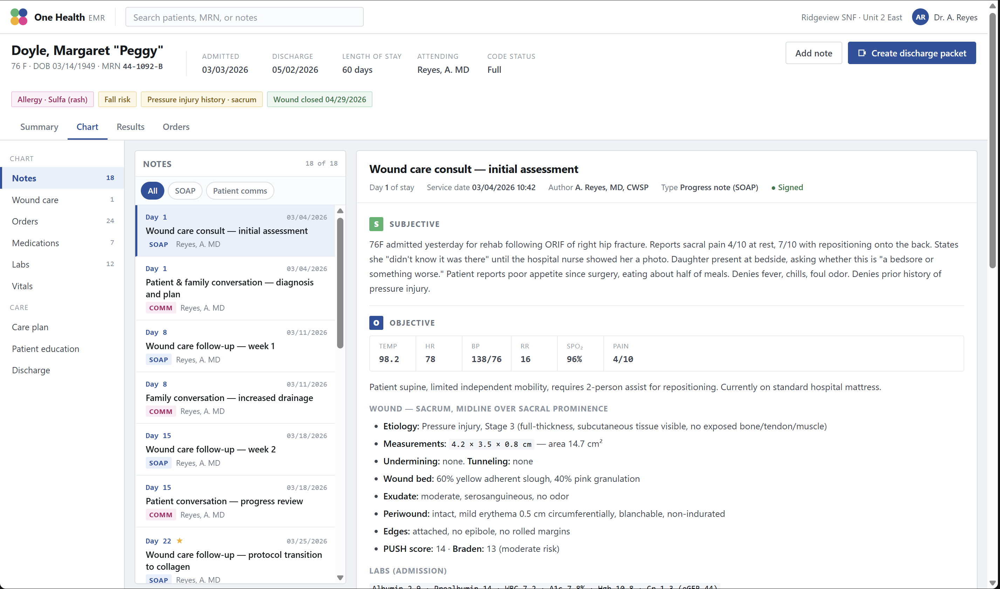
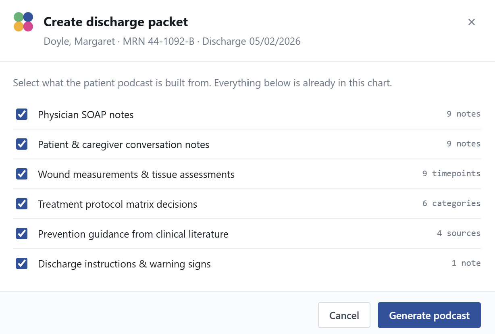
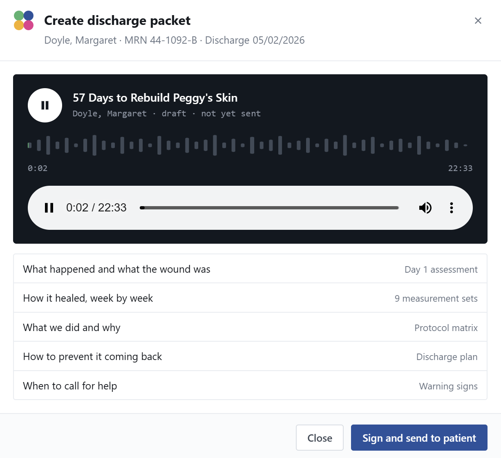

Sheet 02 of 06
One Health Partners · 2026
One button in the EMR turns sixty days of clinical notes into a podcast the patient can actually understand — without asking anyone to write a word more.
Role
Product Development Intern
Organization
One Health Partners
Naperville, IL
Built with
Custom EMR · Structured LLM prompt assembly · NotebookLM audio generation
Built at
Internal hackathon
Solo build · August 2026
A patient leaves a skilled nursing facility after a two-month stay with a folder of paperwork and a vague sense of what happened to them. The record of their care is thorough — physician SOAP notes, weekly wound measurements, tissue assessments, the reasoning behind every protocol change — but all of it is written in clinical language, for clinicians.
The information they need in order to not end up back in a facility is already in that chart. It just isn't in a form they can use. And the standard fix — asking clinicians to write a second, patient-friendly summary — takes time directly out of patient care, so in practice it doesn't happen well or consistently.

I built this EMR system to solve this issue. The clinician's workflow doesn't change at all — physicians document as they always have: SOAP notes, wound assessments, and conversation notes entered into the EMR during the stay. Nothing new is asked of them.
At discharge, one button appears in the chart: Create discharge packet. Behind it, the system pulls six categories of source material out of the record — the SOAP notes, the patient and caregiver conversations, the wound measurements and tissue assessments over time, the treatment protocol matrix decisions, prevention guidance, and the discharge instructions — and assembles them into a single structured prompt using AI. No multi-step agent, no tool loop; the complexity lives in how the chart is selected from and organized, not in the orchestration.
That prompt goes to NotebookLLM, which generates the audio. The finished podcast returns into the EMR, where it sits as a draft attached to the patient's chart until a clinician reviews it and signs off. Keeping generation inside that loop is what lets the whole pipeline stay within the facility's compliance boundary rather than scattering patient information across external tools.
Once signed, it goes out two ways: emailed to the patient, and as a QR code printed in the physical discharge packet they're already walking out with.


The output is chaptered around the five questions a discharged patient actually has: what happened and what the wound was, how it healed week by week, what was done and why, how to keep it from coming back, and when to call for help.
Audio was a deliberate choice. A printed sheet competes with everything else a patient is carrying out the door, and reading it requires sitting down with it. A recording can be played in the car, replayed a week later when the instructions have blurred, or forwarded to the adult child who is actually managing the recovery.
The healing timeline is the part I think matters most. A patient who has spent sixty days being told a wound is "improving" has never seen what that means. Nine measurement sets narrated in sequence turn an abstraction into something they can follow.
Margaret "Peggy" Doyle does not exist. She is entirely synthetic — a fabricated chart built specifically for development and demonstration, with invented dates, measurements, labs, and notes. No real patient record was used at any point in building or showing this system, which is both a HIPAA requirement and the only responsible way to demo clinical software.
Building a convincing fake chart turned out to be real work in itself. The wound had to progress plausibly across nine assessments, the protocol changes had to follow from the tissue findings, and the labs had to be consistent with a 76-year-old recovering from hip fracture surgery. If the synthetic data isn't clinically coherent, the generated podcast isn't either, and you can't tell whether the system works.
0
Extra documentation asked of clinicians
6
Chart sources combined into one patient briefing
1
Button, at the point in the workflow where discharge already happens